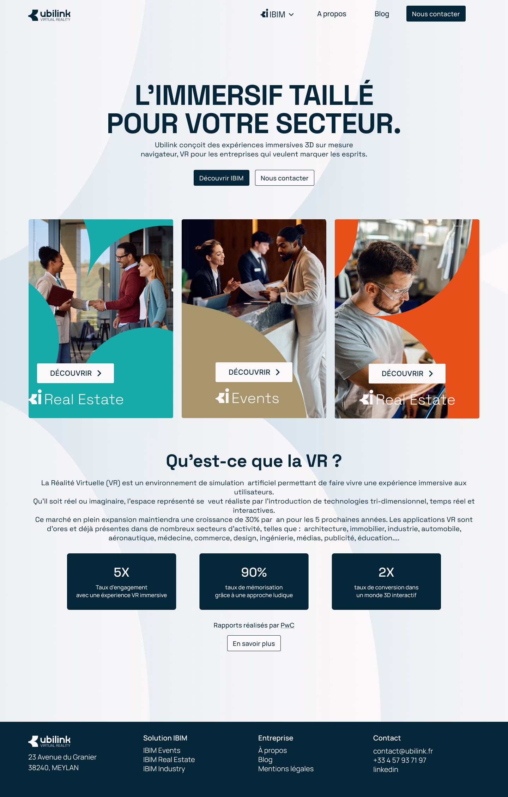

Refonte du site web Ubilink
Stage professionnel · Ubilink, Meylan · avril - juillet 2026

Description
Dans le cadre de mon stage chez Ubilink, j'ai réalisé la refonte complète du site institutionnel de l'entreprise ainsi que de trois sous-sites dédiés à ses solutions métiers : iBIM Events, iBIM Industry et iBIM Real Estate.
L'objectif était de moderniser une interface existante présentant des limites structurelles (hétérogénéité graphique, composants dupliqués, SVG non optimisés) et de mettre en place une architecture modulaire, plus maintenable et cohérente visuellement entre les quatre sites.
Informations
- Durée : 10 semaines (stage)
- Personnes : travail individuel, en collaboration avec le tuteur Florian Darnand
- Type : Projet professionnel
- Contexte : site déjà en production, évolution d'une base existante en PHP
Fonctionnalités
- Architecture site mère + 3 sous-sites indépendants avec composants mutualisés (navbar, footer, scripts).
- Charte graphique personnalisée par sous-site via variables CSS (
--theme-color,--light-color). - Gestion de contenu multilingue (FR/EN) via fichiers JSON - textes séparés du code source.
- Système de scaling responsif personnalisé en JavaScript : calcul d'un facteur de zoom (
--scale) selon la largeur et l'orientation de l'écran, sans multiplication de media queries. - Animations SVG synchronisées au scroll : couleurs et dégradés animés via
animBackgroundSVG(), tracés animés avecstroke-dashoffset. - Intégration des SVG en inline (via
includePHP) pour permettre leur animation par CSS et JavaScript. - Détection du type d'appareil (desktop / laptop / mobile) ajoutée dynamiquement au
<body>.
Aspects techniques
- PHP natif avec architecture modulaire - inclusion dynamique des composants communs via la variable
$masterPath. - HTML5, CSS3 avec variables CSS globales pour la gestion des thèmes.
- JavaScript pour les interactions dynamiques (menus responsives, système de scaling, animations SVG au scroll).
- Fichiers JSON comme moteur de contenu - lus côté serveur via
file_get_contentsetjson_decode. - Maquettes conçues sur Figma, utilisées comme référence tout au long du développement.
- Déploiement sur serveur Nginx/PHP existant de l'entreprise.
Difficultés rencontrées
- Concevoir une architecture capable de gérer simultanément un site mère et trois sous-sites, tout en conservant une identité visuelle cohérente résolu par des composants réutilisables et une utilisation intensive de variables CSS.
- Garantir la stabilité de l'interface lors des redimensionnements avec le système de scaling personnalisé.
- Assurer une expérience homogène sur desktop, tablette et mobile pour l'ensemble des quatre sites.